Research
My research focuses on LLM evaluation, trustworthy and responsible AI, privacy-preserving multimodal analytics, and robust machine learning. Across these areas, I study how AI systems can learn from imperfect information, generate useful and reliable outputs, and preserve meaningful information while respecting privacy and other constraints.
LLM Evaluation, RAG, and Fine-Tuning
My current LLM evaluation work investigates how different strategies affect the quality, reliability, and interpretability of generated text. RAG-Eval examines retrieval-augmented generation, prompt optimization, and parameter-efficient fine-tuning as distinct approaches to improving LLM performance.
Retrieval-Augmented Generation
In the retrieval-augmented setting, a question is embedded and matched to a reference corpus using similarity search. The most relevant passages are then inserted into the model context before generation. The retrieval-off condition answers from the prompt alone, providing a comparison for examining the contribution of retrieved information.
LoRA Fine-Tuning
LoRA provides a separate approach to adapting the model. Rather than relying on retrieved context, low-rank matrices are introduced into the model's attention layers while the underlying model parameters remain frozen. The adapter is trained directly on input/output examples, allowing the experiment to examine direct parameter adaptation using substantially fewer trainable parameters than full fine-tuning.
RAG-Eval
RAG-Eval is a benchmarking framework for comparing zero-shot, prompt-optimized, retrieval-augmented, and LoRA fine-tuned approaches for answering comprehension questions about health advertisements.
| Prompt optimization: off | Prompt optimization: on | |
|---|---|---|
| Retrieval: off | Baseline zero-shot | Prompt-optimized only |
| Retrieval: on | RAG only | RAG + prompt-optimized |
LoRA fine-tuning is evaluated as a separate arm rather than as a factor in the retrieval × prompt-optimization design.
Evaluation Metrics
- RAGAS faithfulness
- Flesch–Kincaid readability
- Language-model surprisal
- Task-appropriate answer-quality measures
Preliminary analyses examine the main effects of retrieval and prompt optimization and whether the two factors interact. The current sample provides more statistical power for estimating main effects than for detecting interaction effects.
Pilot: Surprisal and Public Health Ad Comprehension
A related pilot tests the same idea in a concrete, real-world setting: does LLM surprisal predict which parts of a public health advertisement get misunderstood by a distracted listener (e.g., while driving)? Participants listened to public health ads spanning 10 different topics sourced from the CDC, WHO, and similar organizations, presented in "easy" and "complex" versions, while performing a concurrent reaction-time task simulating divided attention, then answered comprehension questions.
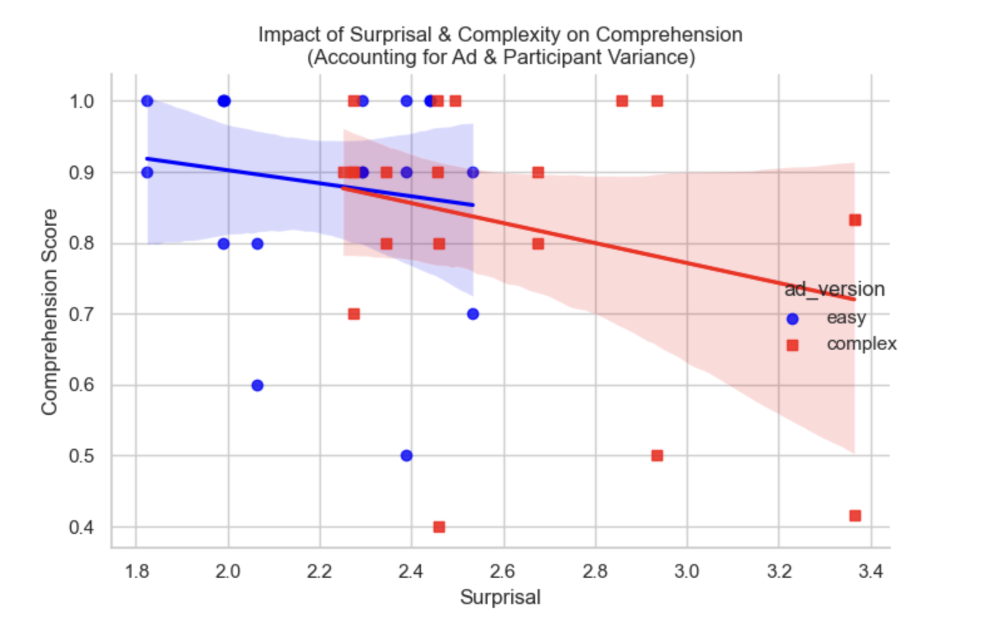
| Model (mixed-effects) | N | Groups | Surprisal coefficient | p-value |
|---|---|---|---|---|
| Ad-level mean comprehension | 38 | 4 | −0.102 | 0.164 |
| Item-level correct/incorrect | 125 | 5 | 0.000 | 0.752 |
Honest read at this pilot stage: the effect of surprisal on comprehension is directionally negative in both models — higher surprisal, lower comprehension — matching the hypothesis, but not statistically significant at this sample size. That's expected for an n this small; the next step is scaling from this feasibility pilot to a 100-participant study with adequate power to detect a medium effect.
Agentic LLM Evaluation
An in-progress extension uses the OpenAI SDK to orchestrate multiple LLM-based agents with distinct roles. The system identifies high-surprisal segments in generated text and routes them to specialized agents for further evaluation and revision.
The agent architecture includes specialized roles such as a communication agent that evaluates clarity and communication quality, a medical agent that evaluates content from a health and medical-information perspective, and a rewriting agent that proposes revisions to high-surprisal segments. Different LLMs can be used for different agent roles, allowing specialized model capabilities to contribute to the evaluation and rewriting process.
This work explores a broader question in LLM evaluation: can multiple specialized AI agents collaboratively identify potentially problematic language, evaluate it from different perspectives, and produce a more understandable revision? The goal is to extend static benchmarking toward agentic evaluation of AI-generated content, with an emphasis on surprisal, communication quality, domain-specific reasoning, and controlled rewriting.
Privacy-Preserving Video & Voice Anonymization
Classroom video recordings support research on teaching quality and student engagement, but they also contain biometric and personally identifiable information, which can limit how freely such data can be collected, shared, and reused.
With Guangjing Cao and my postdoctoral advisor Dr. Jacob Whitehill at WPI, I built a computer-vision pipeline that constructs anonymized classroom video from detected people and background components, preserving their original locations and poses rather than simply blurring or deleting portions of the raw footage. The rendering process is designed to avoid retaining identifiable appearance information in the rendered representation.
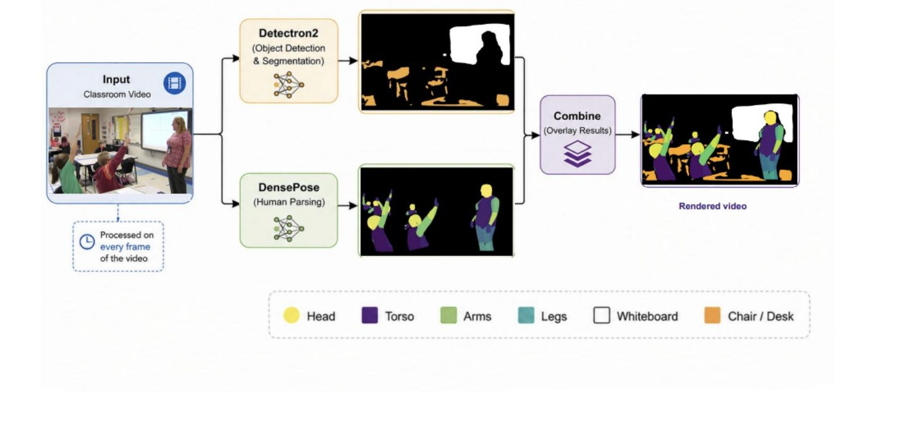
In a human-participant study (n=40) conducted on Prolific, participants annotated classroom clips for activity type, teacher/student actions, group engagement, and teacher gaze direction under four conditions: rendered without sound, rendered with sound, face-blurred, and raw.
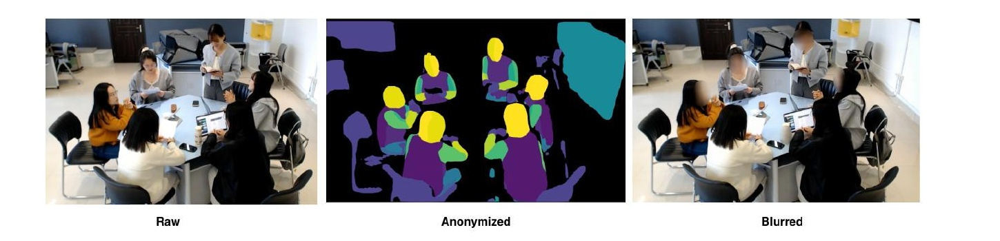
Human-Participant Results
Utility depended strongly on task. Coarse activity type showed no statistically significant accuracy drop (repeated-measures ANOVA, p=0.388). Fine-grained actions and gaze direction were more sensitive: gaze accuracy fell by roughly 40 percentage points from raw to rendered. Face blurring generally preserved more annotatable signal than the rendering pipeline, although its effectiveness depends on successful face detection.
Removing audio produced the largest accuracy loss. Anonymization level was also associated with systematic changes in the construct being measured: mean rated student engagement increased as anonymization decreased.
| Condition | Actions F1 | Gaze | Engagement |
|---|---|---|---|
| Rendered, no sound | 0.328 | — | 0.79 |
| Rendered | 0.602 | 0.322 | 0.89 |
| Blurred | 0.631 | 0.578 | 0.95 |
| Raw | 0.684 | 0.728 | 0.97 |
Voice Anonymization
Because removing audio produced the largest loss in annotatable information, a related research direction is voice anonymization that preserves semantic and prosodic information while reducing speaker-identifying characteristics. Candidate approaches include x-vector–based speaker anonymization and prosody-preserving methods. Prior work suggests that effectiveness can depend on the choice of pseudo-speaker representation.
Applied ML for Financial Data Quality (Moody's Analytics)
As a data scientist rotating across Predictive Analytics teams at Moody's, I worked on several projects aimed at improving the completeness and reliability of the firmographic and risk data underlying Moody's products.
MESA — Automated Firm-Sizing Model
MESA (Modeled Employees, Sales, and Assets) estimates a company's size — employee count, revenue, and assets — by combining signals from financial filings, firmographic data (industry, ownership hierarchy, geography), and technographic data (web presence, patents, public filings, trade data) into a stacking-ensemble model. The estimates feed a range of downstream use cases, including master data management, marketing, risk segmentation, and insurance underwriting, wherever a firm's true size isn't directly reported.
Industry Code Classification
Built a neural architecture to predict a firm's industry code when it's missing, combining an LSTM with attention over unstructured text fields (firm name, trade description) with dense embeddings over categorical firmographic fields (country of incorporation, legal form, size category), concatenated into a final classification layer. A recurring practical challenge was noisy, multilingual trade-description text — untranslated one-word descriptions in Portuguese, garbled or irrelevant entries in Chinese and Korean sources — which motivated follow-on work on translation, noise removal, and ranking multiple plausible industry codes per firm rather than predicting a single best guess.
Reputation Risk Score
Designed a system that scores entities on a four-tier reputation scale (Good, Neutral, Adverse, Severe) by combining adverse-media news coverage with dedicated ESG, credit-risk, and compliance-risk sub-models that feed into a central scoring model, integrating financial news sentiment with quantitative financial ratios. The system also generates an automated narrative summary whenever an entity's score shifts sharply enough to warrant explanation. This work drove a 15% improvement in reputation risk scoring accuracy against internal and external validation datasets.
Post-Hurricane Building Damage Classification from Satellite Imagery
With Alison Heslin at Moody's Analytics CRE Research, during a quantitative researcher internship, replicated and extended a published deep-learning approach (Cao et al., "Building Damage Annotation on Post-Hurricane Satellite Imagery Based on Convolutional Neural Networks") for classifying building-level damage from Hurricane Harvey satellite imagery, with building damage/no-damage labels drawn from crowdsourced annotation and OpenStreetMap building coordinates.
A central question was whether a much cheaper, freely available data source could replicate results obtained from expensive commercial imagery: the original paper used 0.46m-resolution GeoEye-1 imagery, so this work also replicated the pipeline on free, open-source 10m-resolution Sentinel-2 imagery to test whether the ~20× drop in resolution still preserved enough signal for reliable classification. Several classifiers were compared: a CNN trained from scratch, and transfer learning with pretrained ResNet50 and VGG16 backbones, across different activation functions, optimizers, regularization, and data augmentation strategies.
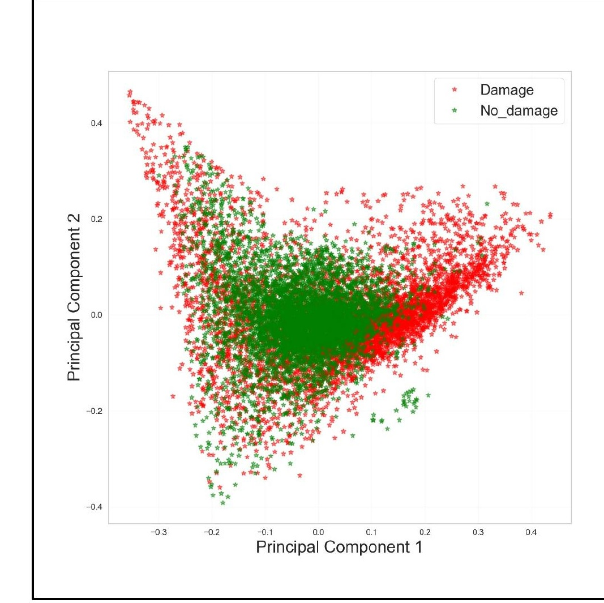
The best model, evaluated on the GeoEye-1 replication, reached an AUC of 0.997 on a balanced test set and 0.981 on an unbalanced test set for damage/no-damage classification.
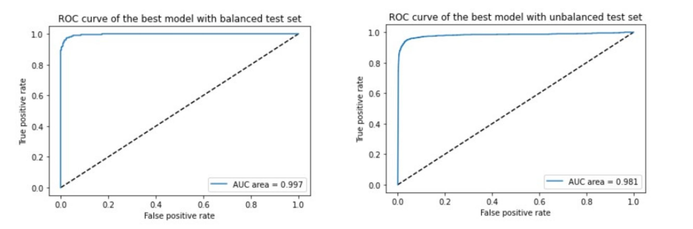
Identified future directions included incorporating additional spectral bands, augmenting with other data sources such as LiDAR or RADAR, self-supervised pretraining prior to classification, and testing generalization on other hurricane events.
Robust Hadamard Autoencoders (Ph.D. Work)
My doctoral research, advised by Dr. Randy Paffenroth and Dr. Diran Apelian at WPI, developed self-supervised Hadamard autoencoder methods for recovering useful signal from incomplete or corrupted observations without requiring clean, fully observed ground-truth data.
Method
An ordinary autoencoder learns a low-dimensional nonlinear representation from data:
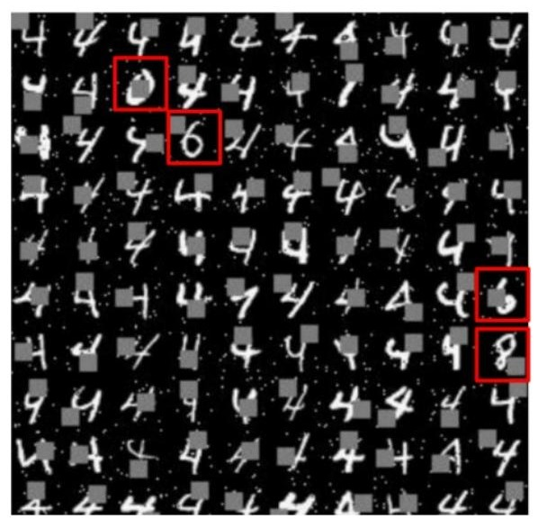
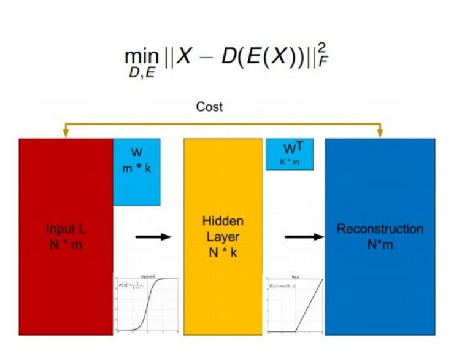
Robust Principal Component Analysis (RPCA), in contrast, decomposes observations into structured low-rank and sparse components:
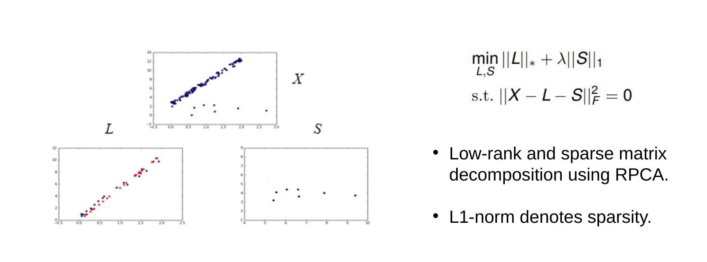
The robust deep autoencoder replaces the linear low-rank representation with a nonlinear learned representation. The self-supervised approach masks portions of the observed data and trains the model to predict hidden information from the remaining visible information:
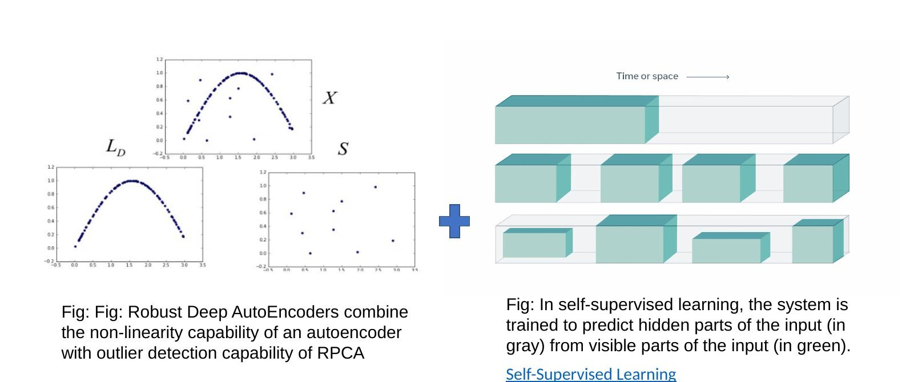
The final Robust Hadamard Autoencoder objective combines masked reconstruction of observed, uncorrupted entries with a sparse corruption penalty:
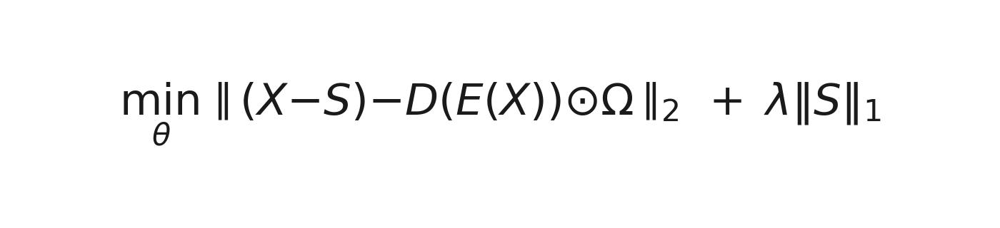
Blind Image Denoising & Inpainting
The framework was evaluated on MNIST and CIFAR-10 under severe corruption settings — simultaneous salt-and-pepper noise and random 10×10 missing blocks — training directly on corrupted data with no access to clean images, and compared against four specific baselines: a standard autoencoder (SAE), a variational autoencoder (VAE), the original Robust Deep Autoencoder (RDAE), and a state-of-the-art GAN-based inpainting method, the Context Encoder (CE).
| Corruption | SAE | VAE | RDAE | CE | RHA |
|---|---|---|---|---|---|
| 10 | 0.02992 | 0.06718 | 0.01895 | 0.01763 | 0.01601 |
| 70 | 0.05672 | 0.10521 | 0.04795 | 0.06176 | 0.03917 |
| 350 | 0.27894 | 0.19901 | 0.15712 | 0.45005 | 0.13724 |
Lower values indicate better reconstruction error (RMSE). RHA outperforms all four baselines at every corruption level shown — notably, RHA beats CE even though CE is trained with the clean ground-truth image as a reference target, while RHA never sees one.
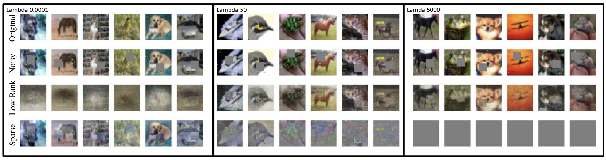
Ultra-Sparse Social Network Inference
With Dr. Gunjan Mahindre and Dr. Anura Jayasumana at Colorado State University, I applied pretrained Hadamard autoencoders to infer missing pairwise distances in extremely sparse social-network data.
Models were pretrained on synthetic Barabási–Albert and power-law cluster graphs and evaluated on networks including the Virgili email network (1,133 nodes), Facebook (4,039 nodes), and train-bombing (64 nodes). At sampling levels below 1% of true distance measurements, the approach substantially outperformed a deterministic low-rank matrix-completion baseline.
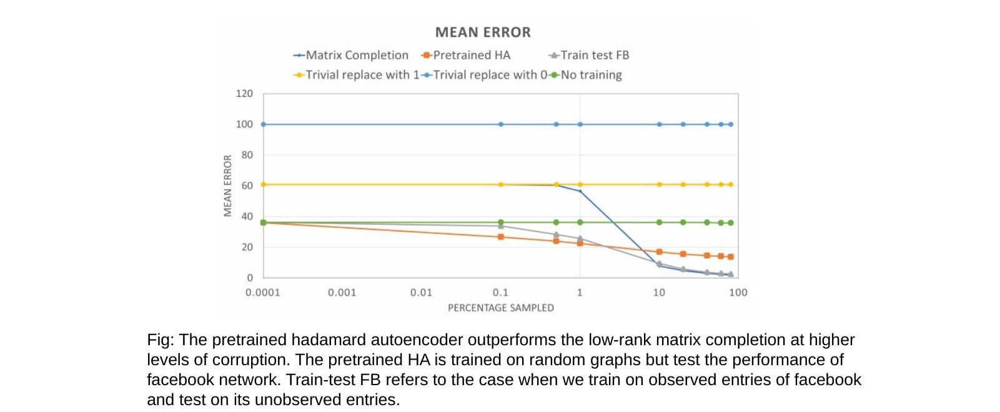
Manufacturing Sensor Data
In collaboration with the UC Irvine Advanced Casting Research Center (ACRC) and Mercury Marine, the framework was applied to missing values in industrial IoT sensor data from aluminum high-pressure die casting. The data contained high levels of missingness with varying patterns, reflecting sensor failures, network connectivity issues, and human error. A related ACRC collaboration with Dr. Randy Paffenroth, Dr. Diran Apelian, and Dr. Ning Sun tackled a companion problem in the same foundry data: severe class imbalance in casting-quality labels and identifying which process parameters most influence quality.
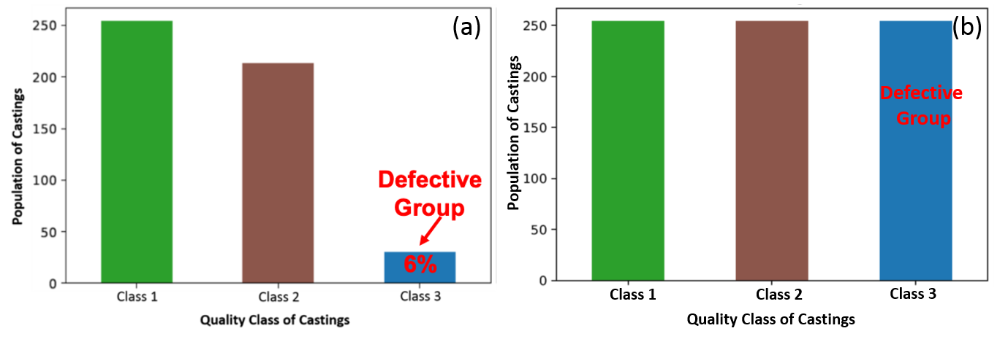
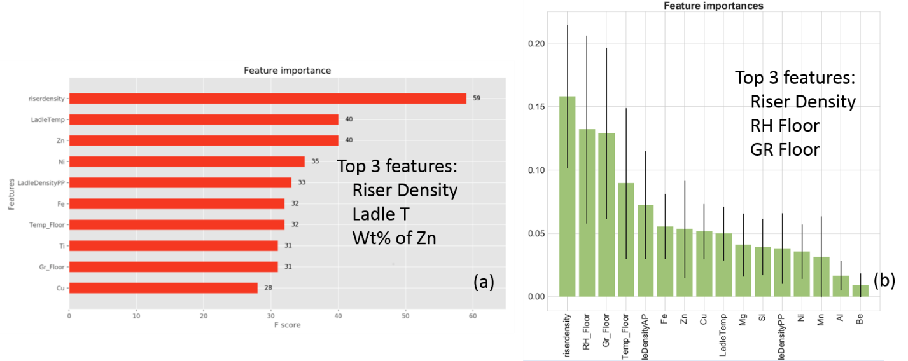
Finance
With Dr. Nitish Bahadur and Dr. Randy Paffenroth, applied the same robust dimension-estimation approach to intraday financial trading data (work in progress): estimating the intrinsic dimensionality of 1-minute stock returns despite missing entries, and comparing three ways of handling those gaps — replacing missing returns with zero, dropping rows with missing returns, and replacing with the column mean — via the normalized singular-value spectrum.
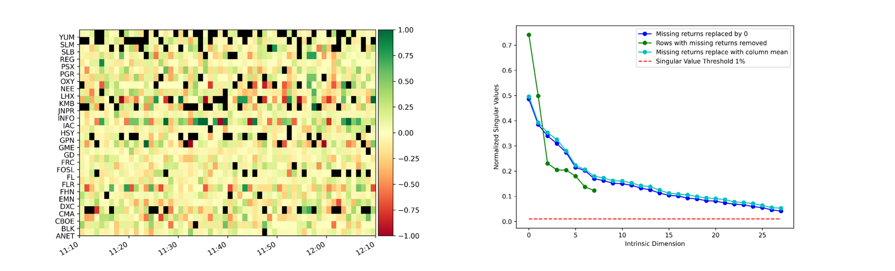
3D LiDAR Point Cloud Classification with Product Coefficients
With Dr. Patricia Medina (CUNY), extended a measure-theoretic feature-engineering approach for classifying 3D LiDAR point clouds (ground, trunk, canopy) using product coefficients — descriptors computed on a dyadic partitioning of each point's local neighborhood that capture geometric structure beyond the raw (x, y, z) coordinates.
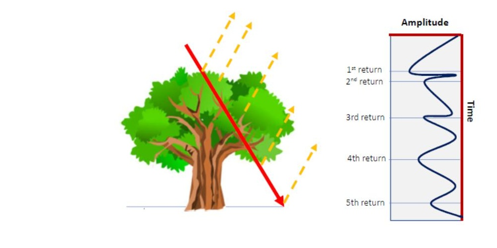
Part II of this work replaces the original PCA-based dimensionality reduction with a PyTorch autoencoder over the enriched feature space, paired with KNN and Random Forest classifiers.
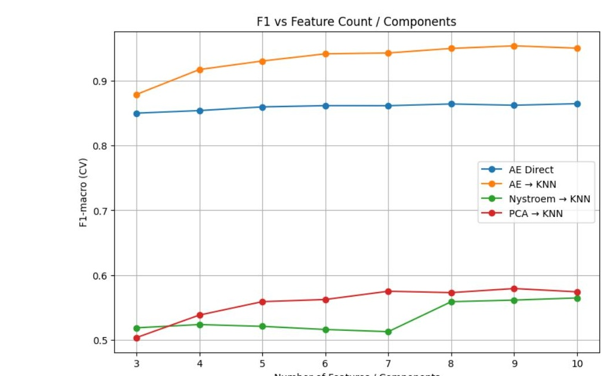
Result: autoencoder-based dimensionality reduction paired with KNN reached an F1-macro of 0.95 — up from roughly 0.58 for the original PCA→KNN approach.
Video & Image Datasets for Depression Assessment (Scoping Review)
With Dr. ML Tlachac, Mila Boyer-Martinez, and Dr. Michael Heinz, conducted a scoping review cataloging every observational video/image dataset used for automated depression assessment — screening 665 studies down to 63 unique datasets, since most automated-depression research reanalyzes the same handful of small, low-diversity datasets.
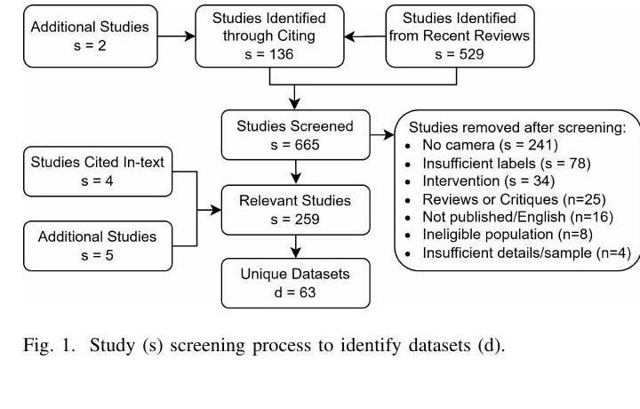
Of the 63 datasets identified: 67% used facial video, data was collected across 18 countries (China most common), and among datasets reporting participant gender, women made up the majority in 65% of them.
Predicting Permafrost Thaw Risk from Arctic LiDAR Data
Ongoing collaboration with Dr. Patricia Medina (CUNY).
Permafrost is ground that has remained frozen for at least two consecutive years. A shallow "active layer" above it thaws each summer and refreezes each winter, while the permafrost itself can be ice-rich, storing large amounts of frozen water and organic material. Rising temperatures deepen the active layer and accelerate thaw — a process worth tracking because permafrost underlies around 15% of land area in the Northern Hemisphere (NASA), the frozen soils store large amounts of carbon, and thawing can drive erosion, land subsidence, ecosystem change, and in some regions methane emissions from microbial activity in newly exposed organic material.

The planned approach asks a more basic question than "which classifier performs best": which mathematical representations of heterogeneous environmental data actually preserve the information needed to identify permafrost condition and thaw vulnerability? A LiDAR point cloud retains detailed 3D geometric information, while a digital elevation model (DEM) replaces that geometry with values on a spatial grid, and multispectral or environmental measurements introduce still other spatial and statistical structures — each format encodes landscape information differently, and most prior work converts LiDAR down to a handful of standard terrain summaries (elevation, slope, aspect, curvature) before it ever reaches a classifier, which necessarily discards geometric detail.
Two objectives follow from that: first, testing whether richer geometric representations derived directly from the LiDAR point cloud — building on the product-coefficient methodology above — provide discriminatory information beyond standard DEM and environmental variables, and whether that holds up when training and testing data are geographically separated (cross-regional transferability is a known weak point in this literature, per Thaler et al. 2023 and the broader survey by Greene et al. 2026). Second, investigating active learning as a way to handle sparse, unevenly distributed permafrost labels — and specifically, whether changing the mathematical representation of the LiDAR data changes which locations an active-learning procedure identifies as most informative to label next.


We have assembled LiDAR point-cloud and DEM data and are formulating the classification problem now. A longer-term direction is extending the framework from static classification to temporal state estimation as repeated LiDAR observations of the same landscape become available, connecting to Kalman-filter–style data-assimilation approaches already used elsewhere in permafrost modeling.
Data source: USGS LiDAR data.